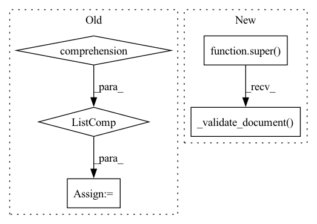

Pattern ID :21265
Before Change
Returns: List[str]
if isinstance(tokens, list):
phrases = [" ".join(phrase) for phrase in tokens]
doc = Document(original=" ".join(phrases))
doc.phrases = phrases
doc.tokens = [[Token(original=token) for token in phrase] for phrase in tokens]
else:
doc = tokensAfter Change
Returns: Document
super()._validate_document( doc)
for phrase in doc.tokens:
for token in phrase:
token.cleaned = token.cleaned.translate(str.maketrans("", "", punctuation))In pattern: SUPERPATTERN
Frequency: 4
Non-data size: 5
Instances Fragment ID: 68082158
Project Name: tomassosorio/nlpiper
Commit Name: 5e39f4669f3f64a69074b95fb77e34cf039057de
Time: 2021-03-26
Author: tomas.s.osorio@gmail.com
File Name: nlpiper/transformers/normalizers.py
M Class Name: RemovePunctuation
N Class Name: RemovePunctuation
M Method Name: __call__(2)
N Method Name: __call__(2)
M Parent Class: Normalizer
N Parent Class: Normalizer
M File Name: nlpiper/transformers/normalizers.py
N File Name: nlpiper/transformers/normalizers.py
M Start Line: 64
M End Line: 87
N Start Line: 73
N End Line: 85
Before Change
else:
phrases = [doc.cleaned.split() if doc.cleaned is not None else doc.original.split()]
doc.tokens = [[Token(original=token) for token in phrase] for phrase in phrases]
return doc
After Change
Returns: Document
super()._validate_document( doc)
doc.tokens = [[Token(original=token) for token in phrase.split()] for phrase in doc.phrases]
return doc Fragment ID: 68082154
Project Name: tomassosorio/nlpiper
Commit Name: 5928ef4e3df89a64fdcc0a494964ed3574956bc2
Time: 2021-03-22
Author: tomas.s.osorio@gmail.com
File Name: nlpiper/transformers/tokenizers.py
M Class Name: BasicTokenizer
N Class Name: BasicTokenizer
M Method Name: __call__(2)
N Method Name: __call__(2)
M Parent Class: Tokenizer
N Parent Class: Tokenizer
M File Name: nlpiper/transformers/tokenizers.py
N File Name: nlpiper/transformers/tokenizers.py
M Start Line: 24
M End Line: 43
N Start Line: 34
N End Line: 44
Before Change
phrases = [" ".join(phrase) for phrase in tokens]
doc = Document(original=" ".join(phrases))
doc.phrases = phrases
doc.tokens = [[Token(original=token) for token in phrase] for phrase in tokens]
else:
doc = tokens
for phrase in doc.tokens:After Change
Returns: Document
super()._validate_document( doc)
for phrase in doc.tokens:
for token in phrase:
token.cleaned = getattr(token.cleaned, self.mode)() Fragment ID: 68082155
Project Name: tomassosorio/nlpiper
Commit Name: 5e39f4669f3f64a69074b95fb77e34cf039057de
Time: 2021-03-26
Author: tomas.s.osorio@gmail.com
File Name: nlpiper/transformers/normalizers.py
M Class Name: CaseTokens
N Class Name: CaseTokens
M Method Name: __call__(2)
N Method Name: __call__(2)
M Parent Class: Normalizer
N Parent Class: Normalizer
M File Name: nlpiper/transformers/normalizers.py
N File Name: nlpiper/transformers/normalizers.py
M Start Line: 35
M End Line: 58
N Start Line: 54
N End Line: 66
Before Change
else:
phrases = [self.t.tokenize(doc.cleaned) if doc.cleaned is not None else self.t.tokenize(doc.original)]
doc.tokens = [[Token(original=token) for token in phrase] for phrase in phrases]
return doc
After Change
Returns: Document
super()._validate_document( doc)
doc.tokens = [[Token(original=token) for token in self.t.tokenize(phrase)] for phrase in doc.phrases]
return doc Fragment ID: 68082145
Project Name: tomassosorio/nlpiper
Commit Name: 5928ef4e3df89a64fdcc0a494964ed3574956bc2
Time: 2021-03-22
Author: tomas.s.osorio@gmail.com
File Name: nlpiper/transformers/tokenizers.py
M Class Name: MosesTokenizer
N Class Name: MosesTokenizer
M Method Name: __call__(2)
N Method Name: __call__(2)
M Parent Class: Tokenizer
N Parent Class: Tokenizer
M File Name: nlpiper/transformers/tokenizers.py
N File Name: nlpiper/transformers/tokenizers.py
M Start Line: 71
M End Line: 90
N Start Line: 72
N End Line: 82